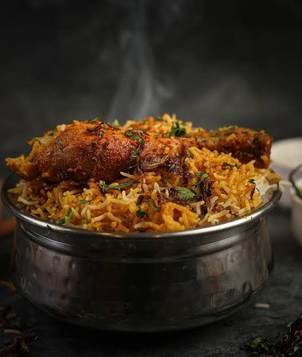

Welcome to the Indian cusine
Recipes are roadmaps, not prisons. Don't be afraid to experiment and make them your own.
Idli
Ingredients & Recipe
- Urad dal
- Idli rice
- Salt
- Water
- Coconut
- Groundnuts
- Green chillies
- Soak urad dal and rice (with fenugreek seeds if using) for several hours. Grind into a batter.
- Let the batter ferment for 8-12 hours, until doubled in size and slightly bubbly
- Grease idli molds and spoon in batter. Steam for 10-15 minutes, or until a toothpick inserted comes out clean.
- Let the idlis cool slightly before gently removing them from the molds.
- Enjoy your fluffy idlis with sambar and chutney!
Dosa

Ingredients & Recipe
- Urad dal
- Chana dal
- Salt
- Water
- Coconut
- Groundnuts
- Green chillies
- Rinse ½ cup urad dal and 1 ½ cups rice (with ½ tsp fenugreek seeds, optional) separately for 4-5 hours.
- Grind urad dal with ¾ to 1 cup water into a smooth batter. Then grind rice with ½ cup water to another smooth batter.
- Mix both batters in a large bowl with ½ tsp salt. Cover and let it ferment in a warm place for 8-12 hours (doubled in size, bubbly).
- Heat a griddle, grease lightly. Pour a ladleful of batter, spread into a thin circle. Drizzle oil/ghee on top.
- Cook 1-2 minutes (golden brown bottom, curled edges). Flip and cook 30 seconds more.
- Enjoy hot with sambar, chutney, or potato masala filling.
Poori
Ingredients & Recipe
- Wheat or Maida
- Oil
- Salt
- Water
- Potato
- Onion
- ChanaFlour
- Greenchillies
- Curry leafs
- Mix flour and salt in a large bowl.
- Knead dough for 5-7 minutes until firm and elastic (not sticky).
Form dough into a ball, coat with oil, cover, and let rest 30 minutes.
- Divide dough into equal balls (ping pong size).
Flour surface and rolling pin.
Flatten a dough ball, then roll into a thin circle (5-6 inches).
- Heat oil in a pan/wok to medium heat (check temperature with a dough scrap).
- Gently slide rolled puri into hot oil.
Press the center of the puri to puff it up.
Fry for seconds until golden brown and puffed (flip halfway).
Remove puri with a slotted spoon and drain on paper towels.
- Serve poori hot, plain or with potato & onion curries
Biryani

Ingredients & Recipe
- Rice: Basmati rice is the classic choice for biryani.
- Meat (optional): Chicken, lamb, mutton, or vegetables are common options.
- Yogurt: Used to marinate the meat and add creaminess.
- Ghee or vegetable oil: For cooking.
- Onions: Sliced for flavor base.
- Ginger & Garlic: Freshly grated for depth of flavor.
- Spices: Ground coriander, cumin, turmeric, cloves, cardamom, cinnamon, bay leaf, and garam masala are typical.
- Kesar (saffron) (optional): Adds a luxurious touch.
- Kewra water (optional): A floral water for extra fragrance.
- Mint & coriander leaves: Freshly chopped for garnish.
- Nuts & fried onions (optional): For added texture and richness.
- Rinse and soak basmati rice for 30 minutes,
Marinate your chosen meat (if using) in yogurt, ginger-garlic paste, and spices (coriander, cumin, turmeric etc.) for at least 30 minutes (or overnight for best results),
Optionally, soak saffron in warm milk,
Slice onions and chop fresh herbs (mint & coriander).
- In a pot, heat ghee/oil and add whole spices (cloves, cardamom, cinnamon, bay leaf),
Once fragrant, add sliced onions and cook until golden brown,
Add ginger-garlic paste and cook for a minute,
(For vegetable biryani) Add vegetables and cook until tender,
(For meat biryani) Add marinated meat and cook until browned,
Add water or stock (enough to submerge rice by 1 inch), salt, and bring to a boil,
Drain soaked rice and add it to the pot,
Let the rice simmer for 2-3 minutes, then reduce heat to low and cover tightly,
Cook for 15-20 minutes, or until rice is fluffy and cooked through.
- In a large pot or baking dish, spread half the cooked rice,
Top with cooked meat/vegetables and any fried onions or nuts (if using),
Drizzle with saffron milk/water and sprinkle with kewra water (if using),
Layer the remaining rice on top,
Seal the pot/dish tightly with foil or a dough seal,
Cook over low heat for 10-15 minutes, or until heated through.
- Heat oil in a pan/wok to medium heat (check temperature with a dough scrap).
- Fluff the biryani gently with a fork before serving,
Garnish with chopped fresh coriander leaves and fried onions (if using),
Serve hot with raita or your favorite curry.
Samosa
Ingredients & Recipe
- For the Dough:
All-purpose flour (maida),
Water,
Ghee or vegetable oil,
Carom seeds (ajwain) (optional),
Salt
- For the Filling:
Potatoes (boiled and mashed),
Green peas (boiled or frozen),
Cooking oil,
Cumin seeds,
Ginger (minced),
Green chili (chopped) (optional),
Asafoetida (hing) (optional),
Coriander leaves (chopped),
Lemon juice (or amchur powder),
Salt,
Spices (optional): coriander powder, garam masala, cumin powder, red chili powder, fennel seeds
- Make the Dough:
In a large bowl, combine flour and salt,
Gradually add water, mixing until a stiff dough forms,
Knead for 5-7 minutes until smooth and elastic. Add a little more water if too dry, or flour if too sticky,
Add a teaspoon of oil and knead again,
Cover the dough with a damp cloth and let it rest for 30 minutes.
- Prepare the Filling:
Boil and mash potatoes,
In a pan, heat oil over medium heat. Add cumin seeds and let them sizzle,
Add chopped ginger and green chili (if using). Saute for 30 seconds,
Add a pinch of asafoetida (optional) and cook for a few seconds more,
Add boiled peas and cook for 2-3 minutes,
Add mashed potatoes, chopped coriander leaves, lemon juice (or amchur powder), and salt,
If using, add a teaspoon each of coriander powder, garam masala, cumin powder, and red chili powder,
Mix well and cook for a few minutes until heated through. Taste and adjust seasonings,
Let the filling cool completely.
- Assemble and Fry the Samosas:
Divide the dough into equal balls. Roll each ball into a thin circle,
Cut each circle in half. Brush a little water along one straight edge,
Place a spoonful of filling in the corner and form a cone shape, sealing the edges with water,
Heat oil in a pan or wok over medium heat,
Carefully lower the samosas into the hot oil and fry until golden brown and crispy on all sides,
Drain on paper towels to remove excess oil.
- Heat oil in a pan/wok to medium heat (check temperature with a dough scrap).
- Serve samosas hot with your favorite chutney or dipping sauce.